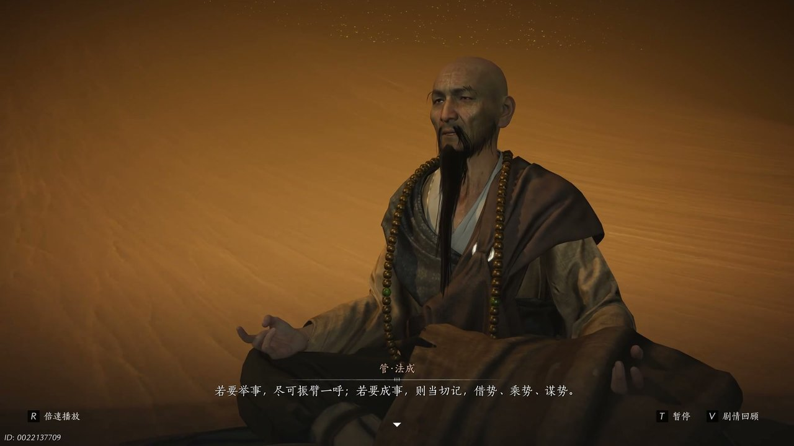

燕云背后的故事：第15集 第十五集 画卷

我知道好些朋友都是从短视频、数码测评短视频里刷到过小米14与iPhone16 Pro的真机对比内容。这是一期安卓旗舰与苹果新款旗舰全方位横向体验测评内容，核心围绕日常使用、续航、性能、影像、系统、性价比展开全面实测对比。今天咱们就从博主一年小米14使用体验说起。指尖摩挲着机身微凉的金属边框，日复一日的朝夕相伴早已让熟悉变得麻木，原本下定决心更换主力机型的博主，在一遍遍深度对比两款手机各项参数、日常手感与长期实际体验后，内心不断纠结犹豫，原本笃定的换机打算，也在层层权衡之下迎来了意想不到的反转。

昏暗安静的房间里，台灯暖黄的光线落在掌中的旧手机上，指尖轻轻点亮屏幕，卡顿延迟的画面瞬间勾起积攒已久的烦躁。“一年时间，当初满心欢喜的小甜心，终究变成了处处不如意的旧机型。”他轻轻叹了口气，眼底满是无奈，长久使用小米14的时光，让三条致命短板深深困扰着自己。小巧精致的机身注定搭配小容量电池，加上芯片本身耗电漏电问题，续航能力在所有用过的机型里稳居末尾，出门总要时刻担心电量告急。长久使用过后系统流畅度直线下降，哪怕自己常年习惯这款系统，也难以忍受频繁卡顿。高负载游戏场景里弊端更是明显，盛夏仅仅游玩两局手游，机身就迅速发烫发热，系统强制降低帧率锁死画面，退出游戏后桌面依旧卡顿迟缓。频繁切换软件、拍照录像日常操作，手机都会陷入又烫又卡的糟糕状态，糟糕的使用感受层层叠加，也让他无比坚定，是时候更换一台全新的主力手机了。

指尖交替握持两台手机，细腻温润的弧度与硬朗笔直的边框形成鲜明反差，冷暖触感在掌心不断交替。“原来大家追捧的小屏旗舰，小米14实际尺寸竟然比苹果新款还要大上不少。”他缓缓翻转机身，仔细打量着边框收窄、机身修长的iPhone16 Pro，更大弧度的边角设计，让日常握持手感更加舒适顺滑。看似小幅升级的电池容量，并没有达到亮眼的数值，可苹果独特的功耗优化，让有限电量发挥出远超参数的实力。按照自己日常刷视频、聊天、刷资讯的使用习惯，新款苹果手机续航竟然比旧安卓多出整整一个小时，就算开启全天候常驻显示，依旧保持出色续航。可长久以来的充电短板始终没有改变，缓慢的充电速度根本做不到短时间快速回血，快充形同虚设，只能一点点缓慢续命，后半段电量充电更是拖沓漫长。对比安卓插上充电器就满格能量的畅快体验，苹果充电只像是勉强延续使用时长，完全没有安心踏实的使用幸福感。

滑动屏幕翻看界面，细腻丝滑的动画流转在每一个操作瞬间，光影渐变、毛玻璃质感尽显精致高级。“没想到时隔这么久，iOS终于放下固执，用上了很多安卓实用功能。”他来回切换控制中心，解锁全新权限，忍不住低声感慨。苹果系统几乎全覆盖界面细节的过渡动画，立体生动的转场模糊效果，让每一次打开关闭应用都赏心悦目，搭配超高素质屏幕，锁屏界面都极具美感。精致的高级材质特效氛围感拉满，可突兀杂乱的灵动区域、简陋敷衍的桌面搜索动画，又拉低了整体质感。反观小米系统，很多动画效果直接简化省略，画面平庸单调，缺少层次感与灵动美感。即便苹果陆续加入应用锁、通话录音等刚需功能，依旧迟迟不肯上线应用分身、悬浮小窗这类高频实用功能。他也暗自感慨，国产系统借鉴苹果设计时也要守住自身优势，不要盲目照搬独家专属交互，丢失属于安卓本身的使用特色。

指尖按压机身侧边新增按键，凹凸不平的缝隙很容易积攒灰尘污垢，缝隙深处难以清理，长久使用格外影响观感。“这个按键设计根本没有考虑普通人日常使用，完全脱离正常握持习惯。”他皱着眉头不断吐槽，全新实体按键造型怪异，位置别扭，常规自拍杆、手机支架都无法正常夹持，强行使用还极易损坏机身零件。耗费高价更换专用配件，才勉强解决适配难题。备受期待的智能AI功能，也只在动画特效上更加精致华丽，没有任何实用亮眼的进阶功能，华而不实毫无意义。进入游戏实测帧率，iPhone长时间稳定满帧运行，原神、王者荣耀多款大型手游都不会轻易掉帧降频，机身温控也更加稳定。可游戏模式缺少分屏小窗，后台留存能力极差，切出去回复消息再返回，游戏大概率直接断线重连，枯燥等待对局间隙，只能无所事事静静发呆，完全比不上安卓游戏便捷灵活的多任务操作。

走进信号薄弱的电梯间，手机屏幕瞬间失去网络，空白页面久久无法加载内容。“原来苹果手机不是偏僻地方信号差，是走到哪里信号都不尽人意。”他无奈摇头，日常居家刷视频、刷社交软件，频繁出现白屏卡顿、进度条停滞、按键无响应的情况，严重影响日常使用体验。对比信号稳定流畅的小米手机，差距一目了然。打开相机拍摄景物，苹果直出画面色调偏黄，与人眼所见景色相差甚远，自己并不偏爱这种成像风格。二手闲置物品拍照上架，小米成片更容易吸引买家成交。新款长焦镜头规格大幅缩水，感光元件极小，白天勉强清晰，夜晚拍摄满是噪点与眩光，基本只能充当摆设。唯独视频录制画质出众，动态范围宽广、画面细腻稳定，刚好契合自己自媒体拍摄素材的需求，也成为苹果手机为数不多难以替代的优势。

坐在桌前仔细核算价格差价，老旧小米14二手折价后依旧留有不错残值，可想要更换同规格苹果新款手机，依旧需要额外付出高额费用。“算完这笔账我才明白，其实根本没必要执意换机。”他轻轻放下两台手机，心中纠结瞬间烟消云散。巨大的价格差距，让原本坚定的换机想法彻底动摇，细数两款手机优缺点，苹果解决了旧机续航、卡顿、性能三大痛点，却又带来信号差劲、充电缓慢、影像倒退、功能缺失一堆新麻烦。权衡所有利弊过后，他坦然放弃更换iPhone16 Pro的计划。所有期待尽数转移到下一代小米新机身上，满心盼望新款机型能够优化续航短板、提升系统流畅度、稳定高性能释放、升级优质长焦镜头。只要迭代足够用心，自己一定会第一时间更换新机，圆满结束这场漫长细致的机型对比体验。
本期故事完整走完小米14换新iPhone16 Pro的全部心路历程，从头到尾细致对比续航手感、系统交互、游戏性能、影像拍摄、保值价格所有维度，完整梳理出新旧旗舰各自优劣。全篇埋下续航天然差距、iOS功能固执取舍、长焦影像反向降级、高额换机性价比不足四大悬念。说实话，我格外共情博主纠结犹豫许久，最终无奈放弃换机的纠结心情，满怀期待等待国产旗舰迭代升级。下期依旧会带来全新机型深度真机实测，深挖安卓下一代旗舰升级亮点，揭露苹果新机不为人知的隐藏短板。精彩数码体验故事持续更新，大家多多关注不要错过。你们觉得用了一整年的小米14，到底值不值得加价更换iPhone16 Pro，不妨在评论区说说自己真实的看法。
关于我们
📱 公众号名称：三天游戏
✍️ 作者：曾三天
扫码关注公众号，获取每日最新资讯

商务合作与版权
商务合作 / 内容投稿 / 品牌推广
请关注公众号「三天游戏」后台留言联系
版权声明：本文由作者整理，转载需注明出处。